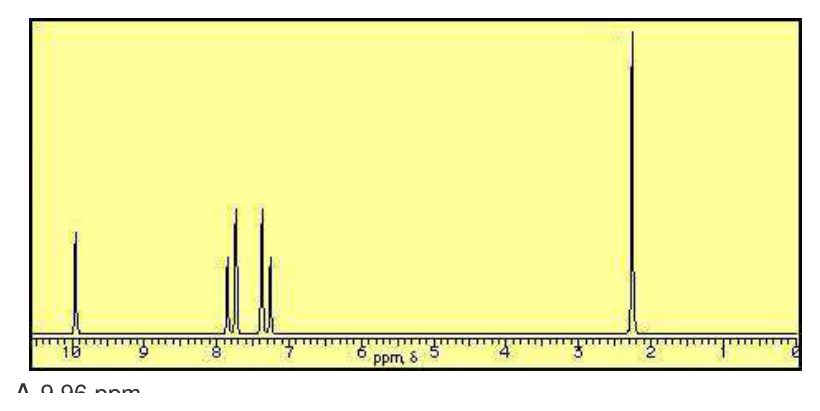
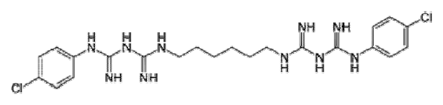
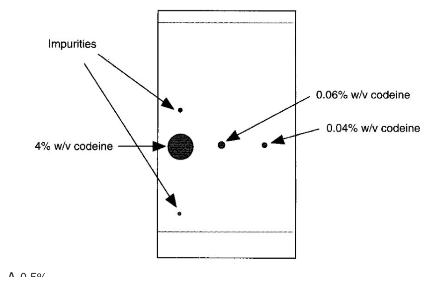

開卷有益 ／
藥師 ／ 藥物分析與生藥學 ／ 107 年第 2 次107 年第 2 次藥師藥物分析與生藥學試題與答案
這一頁是民國 107 年第 2 次藥師藥物分析與生藥學的整份歷屆試題，共 80 題，題目與標準答案出自考選部「國家考試試題及測驗式試題答案」開放資料，其中 79 題附有詳解。以下逐題列出題幹、選項與答案；要計時作答或記錄成績，請用線上練習。
考選部原始場次代碼：107100
線上作答這一科 →
全部 80 題
第 1 題
下列何者為指示劑酚酞試液之溶媒？
（A） 水（B） 乙醇（C） 乙醚（D） 氯仿答案：（B）
詳解與考點 正解：酚酞在水中的溶解度不足，製備酚酞試液時以乙醇作為溶媒，才能形成均一且可供酸鹼滴定使用的指示劑溶液，故選 B。
A：水是許多無機指示劑的常見溶媒，但酚酞為有機化合物，在水中不易充分溶解，不能直接以水取代乙醇。
C：乙醚雖可溶解部分有機物，但不是酚酞試液的規定製備溶媒，且揮發性高，不利於常規滴定試液使用。
D：氯仿對有機物有溶解能力，卻不適合作為酸鹼指示劑試液的標準溶媒；判準是藥典試液的既定製備條件，不是單看是否能溶。
本題考點：酚酞試液（phenolphthalein solution）——遇到指示劑的溶媒題，先依其水溶性與規定配方判斷；酸鹼指示劑溶媒（acid-base indicator solvents）——有機指示劑常需醇類助溶，勿把可溶性與標準試液配方混為一談。
第 2 題
測定物質旋光度時常用之貯液管長度為何？
（A） 5 mm（B） 15 mm（C） 100 mm（D） 150 mm答案：（C）
詳解與考點 正解：旋光度測定的貯液管長度通常採 1 dm，換算為 100 mm；此長度也與比旋光度公式中光程長度以 dm 表示的慣例相符，故選 C。
A：5 mm 等於 0.05 dm，光程過短，旋光角很小而不利於常規精確測定。
B：15 mm 等於 0.15 dm，仍遠小於標準 1 dm；不能把一般小型液槽的尺度當作旋光管的常用長度。
D：150 mm 等於 1.5 dm，雖可用於特定低旋光度樣品增加訊號，但不是題目所問的常用貯液管長度。
本題考點：旋光管長度（polarimeter tube length）——常用 1 dm，見到 mm 選項時先換算成 dm；比旋光度（specific rotation）——光程長度進入 [α] = αobs/(l·c)，比較數值前要確認 l 的單位。
第 3 題
下列分析方法中，何者最適合用於液體製劑中乙醇含量的分析？
（A） 紫外光光譜法（B） 紅外光光譜法（C） 液相層析法（D） 氣相層析法答案：（D）
詳解與考點 正解：乙醇是揮發性小分子，在液體製劑的複雜基質中以氣相層析法分離後定量最合適；GC 的進樣與分離條件正符合乙醇的揮發性，故選 D。
A：乙醇缺少強而專一的紫外吸收訊號，紫外光光譜法容易受製劑中其他成分干擾，選擇性不足。
B：紅外光光譜法可辨識乙醇的官能基訊號，但液體製劑常有水與多種賦形劑重疊吸收，不是常規含量分析的最佳選擇。
C：液相層析法能分析許多非揮發性成分，但乙醇本身揮發且保留弱；相較之下，GC 能更直接地處理此類揮發性分析物。
本題考點：氣相層析法（gas chromatography）——小分子、揮發性且需自複雜液體基質分離時，優先考慮 GC；分析法選擇（analytical method selection）——先比對分析物的揮發性、偵測選擇性與基質干擾，再決定光譜或層析方法。
第 4 題
有關螢光光度測定法中所用檢品溶液濃度之敘述，下列何者正確？
（A） 常為分光吸光度測定法檢品溶液濃度之1/10〜1/100（B） 與分光吸光度測定法中所用檢品濃度相同（C） 常為分光吸光度測定法檢品濃度之10〜100倍（D） 不影響螢光光度之測定答案：（A）
詳解與考點 正解：螢光光度法在較低濃度才容易維持螢光強度與濃度的線性關係，通常使用分光吸光度法檢品濃度的 1/10-1/100，以避免內濾效應與濃度淬熄，故選 A。
B：若濃度與分光吸光度測定相同，吸收與再吸收造成的內濾效應較明顯；兩種方法不能一律沿用同一濃度。
C：濃度提高到 10-100 倍會增加濃度淬熄與非線性，訊號不會隨濃度可靠地等比例增加，方向與螢光測定需求相反。
D：檢品濃度直接影響可被激發的分子數，也會在過高時改變量測線性，因此不能說不影響螢光光度測定。
本題考點：螢光量測濃度（fluorimetric sample concentration）——螢光法通常比吸光法使用更稀的檢品，先防止高濃度非線性；內濾效應與濃度淬熄（inner-filter effect and concentration quenching）——遇到螢光強度不再成比例時，優先檢查濃度是否過高。
第 5 題
下列何種化合物在鹼性環境（0.1 N NaOH）下，不會產生red shift？
（A） menthol（B） dextropropoxyphene（C） camphor（D） aspirin答案：（A）
詳解與考點 本題經考選部公告一律給分。作答任一選項皆得分。原因是題目問在 0.1 N NaOH 下不會出現 red shift 的單一化合物，但 menthol 與 camphor 都缺乏會在鹼性下形成共軛陰離子的典型發色團；（A）與（C）均可成立，屬於兩個以上選項成立的乙型爭點，故送分。
A：menthol 為飽和醇，沒有可在鹼性下形成強共軛系統的發色團，通常不預期此種 bathochromic shift。
B：dextropropoxyphene 含芳香發色團與可電離胺基，光譜會受酸鹼型態影響，不能和飽和萜類直接並列為無 red shift。
C：camphor 為非共軛酮，缺少類似 phenol 去質子化後延長共軛的條件，也可判為不會產生 red shift。
D：aspirin 在強鹼中會發生離子化並可形成具不同吸收特徵的 salicylate 相關物種，與不發生 red shift 的判斷不符。
本題考點：bathochromic shift（紅移）先找是否有可因酸鹼反應改變共軛或電子離域的發色團；UV-Vis spectroscopy（紫外可見光光譜）遇到強鹼時，要同時考慮去質子化與水解後產物，不能只看原始化合物名稱。
第 6 題
有關螢光光譜分析法的敘述，下列何者錯誤？
（A） 紫外光可為螢光光譜分析法之激發光（B） 需設定激發光與放射光波長（C） 螢光之強度與quantum yield有關（D） Φ＞1才有螢光產生答案：（D）
詳解與考點 正解：螢光量子產率 Φ 是放射光子數與吸收光子數的比值；只要有非零的螢光放射即可產生螢光，並不要求 Φ＞1，故選 D。
A：紫外光能提供電子由基態升至激發態所需能量，是螢光光譜分析常用的激發光範圍，敘述正確。
B：螢光測定須分別設定激發光與放射光波長，因為放射通常在較長波長出現，兩者不是同一個量測設定。
C：Φ 反映吸收能量轉為螢光放射的效率；非輻射鬆弛或淬熄增加時，量子產率與螢光強度會下降。
本題考點：螢光量子產率（fluorescence quantum yield）——以放射光子數與吸收光子數的比值判斷螢光效率，出現螢光只需 Φ＞0；激發與放射波長（excitation and emission wavelengths）——量測時要分開設定，並利用兩者波長差降低激發光干擾。
第 7 題
下列何者非紫外－可見光光譜儀使用之光源？
（A） 二氧化碳雷射（carbon dioxide laser）（B） 鎢絲燈（tungsten lamp）（C） 氘燈（deuterium lamp）（D） 石英鹵素燈（quartz halogen lamp）答案：（A）
詳解與考點 正解：二氧化碳雷射主要發出紅外光，屬於 IR 光譜相關光源，並非紫外-可見光光譜儀的常用光源，故選 A。
B：鎢絲燈可提供可見光到近紅外區域的連續光譜，是 UV-Vis 儀器可見區常用光源。
C：氘燈在紫外區有連續且穩定的發射，適合用作 UV-Vis 儀器的紫外區光源。
D：石英鹵素燈可作為可見光區光源；石英外殼有利於高溫操作，不能因名稱含鹵素就排除於 UV-Vis 儀器。
本題考點：UV-Vis 光源（UV-Vis spectrophotometer light sources）——紫外區先聯想 deuterium lamp，可見區先聯想 tungsten 或 quartz halogen lamp；二氧化碳雷射（carbon dioxide laser）——依發射波段判為紅外光源，不能與 UV-Vis 連續光源混淆。
第 8 題
在波長291 nm下，carbimazole之比吸光值A（1%, 1 cm）為557，在此波長下測得carbimazole樣品溶液之吸 光值為0.557，則此溶液濃度為何？
（A） 1 mg/100 mL（B） 1 mg/1000 mL（C） 1 g/100 mL（D） 1 g/1000 mL答案：（A）
詳解與考點 正解：比吸光值使用 A = A(1%, 1 cm) × c × l，且題目光徑為 1 cm。先代入 c = 0.557 / (557 × 1 cm) = 0.001%（w/v）。再換算：0.001%（w/v）= 0.001 g/100 mL = 1 mg/100 mL，故選 A。
B：1 mg/1000 mL = 0.1 mg/100 mL = 0.0001%（w/v），只有計算濃度的十分之一；代回後吸光值會是 0.0557，不是 0.557。
C：1 g/100 mL = 1%（w/v），代入 A = 557 × 1 × 1 cm = 557，遠高於題目測得的 0.557。
D：1 g/1000 mL = 0.1%（w/v），代入後 A = 557 × 0.1 × 1 cm = 55.7，仍比題目值高 100 倍。
本題考點：比吸光值（specific absorbance）——A(1%, 1 cm) 代入前要讓濃度以 %（w/v）表示、光徑以 cm 表示；濃度單位換算（concentration unit conversion）——%（w/v）先轉成 g/100 mL，再轉 mg，可避免 10 倍或 1000 倍的錯誤。
第 9 題 待校
Procaine在下列何種pH值溶液中之吸光值最大？（Procaine結構 ）
（A） 1（B） 3（C） 5（D） 9答案：（D）
第 10 題
下列何者會造成1H-NMR中電磁波頻率的改變？
（A） Ho（或Bo）（B） µ（C） I（D） γ答案：（A）
詳解與考點 正解：對固定的 1H 核種，Larmor 頻率由 ν = γB0/(2π) 決定；改變外加靜磁場 Ho 或 Bo 的強度會直接改變共振所需電磁波頻率，故選 A。
B：μ 是核磁矩的性質，與 γ 有關；對同一個 1H 核種而言它不是量測時可任意改變的外加磁場參數。
C：I 為核自旋量子數，決定核是否具有 NMR 活性與可能的自旋狀態；在固定核種與 B0 下，不是改變 Larmor 頻率的直接操作變數。
D：γ 是旋磁比，數學上確實出現在頻率公式內，但對題目指定的 1H 是固定常數；跨核種比較才會因 γ 不同而有不同共振頻率。
本題考點：Larmor 頻率（Larmor frequency）——固定核種時以 ν = γB0/(2π) 判斷，實驗上改 B0 就改共振頻率；旋磁比（gyromagnetic ratio）——γ 可區分不同核種，但分析同一 1H 時應視為常數。
第 11 題
下圖之氫核磁共振光譜何者是醛基（CHO）氫的化學位移？

（A） 9.96 ppm（B） 7.81 ppm（C） 7.29 ppm（D） 2.27 ppm答案：（A）
詳解與考點 正解：氫核磁共振光譜上，訊號的化學位移越大代表氫核所處環境去屏蔽程度越高；圖中最左側、位於約 9.96 ppm 處的單一尖峰，是全圖中位移最大、也是唯一落在 9–10 ppm 區間的訊號，這正是醛基（CHO）氫的典型位置——羰基的去屏蔽效應加上直接鍵結在 sp2 碳上，使醛氫遠離其餘所有氫訊號，獨立出現在最下場（downfield）處，故選 A。
B：7.81 ppm 落在芳香氫典型範圍（約 6.5–8.5 ppm），對應圖中 7.8 ppm 附近成對出現的雙重峰（doublet），是苯環上與醛基較接近一側的兩個等價氫，屬芳香氫而非醛氫。
C：7.29 ppm 同樣落在芳香氫範圍，對應圖中另一組雙重峰，是苯環上與醛基較遠、靠近另一取代基一側的兩個等價氫；與 B 的訊號合計四個芳香氫，呈現對位雙取代苯環典型的 AA'BB' 偶合圖形。
D：2.27 ppm 落在脂肪族氫的範圍，圖中此處為全譜最高的單一尖峰，積分面積最大，對應苯環上取代甲基（–CH3）的三個氫，位移遠比醛氫小，是甲基氫而非醛氫。
本題考點：醛基氫的化學位移（aldehyde proton chemical shift）——羰基去屏蔽加上直接鍵結 sp2 碳，使醛氫訊號恆落在 9.5–10 ppm 附近且與其他訊號分離；芳香氫與脂肪氫的位移區間判讀（aromatic vs. aliphatic proton shift）——芳香氫落在 6.5–8.5 ppm、脂肪族甲基氫落在 1–3 ppm，三個區間彼此不重疊，是判讀 1H NMR 譜最基本的分區依據。
第 12 題
測定檢品中氯離子濃度時，配合適當偵測器使用，下列何種方法最適宜？
（A） 配位滴定法（B） 原子吸收光譜法（C） 氣相層析法（D） 離子層析法答案：（D）
詳解與考點 正解：氯離子屬無機陰離子，離子層析法（ion chromatography）可先以離子交換分離，再配合適當的電導偵測器定量，能直接處理帶電且不揮發的分析物，故選 D。
A：配位滴定法主要利用金屬離子與配位基形成穩定錯合物來判定終點；氯離子不是此法的典型待測金屬離子，無法提供最直接的選擇性定量。
B：原子吸收光譜法測的是游離原子的吸收訊號，主要適用於金屬元素分析；氯離子作為陰離子不適合以此法做常規濃度測定。
C：氣相層析法適合揮發性或可衍生化的中性化合物；氯離子具離子性且不揮發，不能直接以氣相層析法得到合適的分離。
本題考點：離子層析法（ion chromatography）——遇到無機陰、陽離子時，先判斷能否以離子交換分離後再偵測；電導偵測（conductivity detection）——帶電分析物導電度改變可作為定量訊號，常用於無機離子。
第 13 題
以ODS管柱在pH 8.0之緩衝溶液下進行高效液相層析分離時，下列何種嗎啡類化合物的滯留時間會最短？
（A） morphine（B） normorphine（C） ethylmorphine（D） 3-O-benzylmorphine答案：（B）
詳解與考點 正解：ODS 管柱屬逆相層析，保留時間主要隨分析物的疏水性增加而延長。normorphine 相較於 morphine 少了 N-methyl，整體疏水表面較小、極性較高，在 pH 8.0 緩衝液下與固定相的疏水作用最弱，故選 B。
A：morphine 保有 N-methyl，較 normorphine 多一個疏水取代基，因此在 ODS 固定相上的保留通常較長。
C：ethylmorphine 的羥基被 ethyl 取代後，氫鍵供體減少且烷基部分增加，疏水性高於 normorphine；它看似與 morphine 同骨架，但官能基遮蔽會使保留時間延長。
D：3-O-benzylmorphine 額外具有 benzyl 基，顯著增加芳香性與疏水表面，在四者中不會最早流出。
本題考點：逆相高效液相層析（reversed-phase HPLC）——同類化合物在 C18/ODS 管柱上通常越疏水、滯留越久；取代基與保留時間——比較同骨架化合物時，先看是否增加烷基或芳香基，並同時考慮可電離基在流動相 pH 下的狀態。
第 14 題
下列何者為最常用於超臨界流體萃取（supercritical fluid extraction）？
（A） 甲醇（B） 液態氮（C） 甲酸（D） 二氧化碳答案：（D）
詳解與考點 正解：二氧化碳容易在相對溫和條件下形成超臨界流體，毒性低、化學性質穩定，萃取後又可藉減壓移除，因此是超臨界流體萃取（supercritical fluid extraction）最常用的流體，故選 D。
A：甲醇是常見有機溶劑，也可作為二氧化碳超臨界流體的極性修飾劑，但不是最常用的主要超臨界萃取流體。
B：液態氮主要用於低溫冷卻或冷凍保存；其物性與操作目的均不符合常規超臨界流體萃取的主要介質。
C：甲酸可用於調整萃取或層析系統的酸性條件，但不具二氧化碳作為主體超臨界流體的實務優勢。
本題考點：超臨界流體萃取（supercritical fluid extraction）——選主體流體時看是否容易達超臨界狀態、可調溶解力及是否容易移除；超臨界二氧化碳（supercritical carbon dioxide）——非極性至中等極性成分萃取時，優先聯想到二氧化碳，極性不足再以修飾劑調整。
第 15 題
附圖為chlorhexidine的結構，其理化性質為：pKa= 10.8；SolH2O= 0.8 µg/mL，下列何者為其最適當之定量 分析法？

（A） 酸滴定法（B） 鹼滴定法（C） 非水滴定法（D） 沉澱滴定法答案：（C）
詳解與考點 正解：圖示結構為兩個對氯苯基分別接上雙胍基（biguanide）、再以一段六亞甲基鏈相連的雙胍化合物，即 chlorhexidine；判準是先看這個分子能不能溶在水裡做滴定。題目給出的 SolH2O = 0.8 µg/mL 顯示其水中溶解度極低，幾乎不可能配成水溶液進行酸滴定法或鹼滴定法；而 pKa = 10.8 顯示分子上的胍基是強鹼性基團，並非酸性基團，也不具有可與銀離子形成沉澱的鹵素離子結構。這類難溶於水的強鹼性藥物，標準做法是溶於冰醋酸等非水溶媒中，以過氯酸（HClO4）滴定，即非水滴定法，故選 C。
A：酸滴定法是以鹼性標準液滴定具酸性官能基的藥物，而 chlorhexidine 分子上沒有可解離的酸性基團，圖中只看得到雙胍與苯環，無此適用對象。
B：鹼滴定法雖然方向與 chlorhexidine 的鹼性一致，但此法仍以水為溶媒，而 SolH2O = 0.8 µg/mL 的極低水溶解度使藥物無法充分溶解、滴定終點難以判斷，故水中鹼滴定法不適用。
D：沉澱滴定法適用於能與滴定劑形成不溶性沉澱的離子性化合物，典型如鹵化物與硝酸銀反應；chlorhexidine 分子本身是雙胍鹼，圖中沒有可供沉澱反應的鹵素負離子結構，不適用此法。
本題考點：難溶性鹼性藥物的定量分析（non-aqueous titration for weak bases）——水溶解度極低時放棄水相滴定，改用冰醋酸等非水溶媒溶解後以 HClO4 滴定；pKa 與滴定劑選擇的對應——pKa 越高代表鹼性越強，需選用比藥物更強的酸作滴定劑而非鹼滴定劑。
第 16 題
以甲苯蒸餾法進行生藥水分測定時需要的藥材量為多少g？
（A） 50～100（B） 20～50（C） 1～5（D） 15～25答案：（A）
詳解與考點 正解：甲苯蒸餾法以共沸蒸餾把生藥中的水帶出並收集量測，必須有足夠的檢品量才能使水層讀值可靠。依本題所用的藥典測定規格，取樣量為 50-100 g，故選 A。
B：20-50 g 的取樣量低於此法規定的完整範圍，蒸出水量較少時，量筒讀值的相對誤差會放大。
C：1-5 g 適合少量樣品的其他分析情境，但不足以符合甲苯蒸餾法在本題所要求的生藥取樣規模。
D：15-25 g 同樣低於規定範圍；分辨關鍵在本法以可量測的蒸出水層為終點，不能任意縮小檢品量。
本題考點：甲苯蒸餾法（toluene distillation method）——測生藥水分時，以共沸蒸餾將水帶至接收器後讀取體積；取樣量與讀值可靠度——規定取樣量是為使蒸出水量足以準確讀值，遇到藥典數值題須以該法的指定範圍判斷。
第 17 題
在乙酸溶液中，下列何者的酸性最強？
（A） 鹽酸（B） 過氯酸（C） 硫酸（D） 硝酸答案：（B）
詳解與考點 正解：酸性強弱在非水溶劑中必須依溶劑判斷。乙酸是酸性且具鑑別作用的溶劑，過氯酸在其中仍能最有效提供質子，也是非水滴定常用的強酸滴定劑，故選 B。
A：鹽酸在水中是強酸，但不能因水溶液中的強酸分類就判定它在乙酸中最強；非水溶劑會改變各酸的相對解離能力。
C：硫酸的第一步解離很強，然而在乙酸中其相對酸性不及過氯酸。分辨關鍵在比較的是同一溶劑內的酸性，不是只背水溶液的酸強度。
D：硝酸亦為常見強酸，但在乙酸中的質子提供能力不會超過過氯酸。
本題考點：非水酸鹼平衡（nonaqueous acid-base equilibrium）——比較酸性前先鎖定溶劑，水中強酸排序不可直接搬用；鑑別性溶劑（differentiating solvent）——溶劑不能把多種酸完全拉平時，才能觀察其相對強弱差異。
第 18 題
下列何者可做為非水滴定法的溶劑？
（A） 藥用酒精（B） 絕對酒精（C） 冰醋酸（D） 純水答案：（C）
詳解與考點 正解：非水滴定要先看待測物是酸還是鹼，再挑能放大該反應的無水溶劑。冰醋酸是非水酸鹼滴定中常用的質子性酸性溶劑，可促進弱鹼接受質子的反應，使弱鹼的鹼性被大幅增強，因而能以高氯酸滴定系統滴出明確終點，這是藥典滴定弱鹼的標準非水系統，故選 C。
A：藥用酒精含有水分，水會改變無水酸鹼平衡並可能消耗對水敏感的滴定試劑，不是此題所指的標準無水介質。
B：絕對酒精雖為低含水的溶劑，但屬兩性（amphiprotic）溶劑，本身既能給出質子也能接受質子，對弱鹼沒有增強作用，終點無法明確判讀，不是非水滴定弱鹼所用的介質。
D：純水本身就是水溶液滴定的溶劑，不能歸為非水滴定介質。
本題考點：非水滴定（nonaqueous titration）——先依待測物酸鹼性選能放大反應的無水溶劑；冰醋酸（glacial acetic acid）——滴定弱鹼時常作酸性質子性介質；溶劑分類（solvent classification）——題目若只問「可否作為介質」，須區分廣義可用與特定藥典法指定溶劑。
第 19 題
用凱氏法（Kjeldahl’s method）可測定下列何者之含量？
（A） sodium bicarbonate（B） acetic acid（C） phenylalanine（D） ethanol答案：（C）
詳解與考點 正解：凱氏法先把有機氮消化轉為銨態氮，再經鹼化、蒸餾與滴定求得總氮量。phenylalanine 含有胺基氮，因此可藉凱氏法間接測定其含量，故選 C。
A：sodium bicarbonate 只含鈉、氫、碳與氧，沒有可轉為銨態氮的氮元素，凱氏法不適用。
B：acetic acid 的組成為碳、氫、氧，雖可用酸鹼滴定分析，但不能以凱氏法測得特異性含量。
D：ethanol 同樣不含氮；凱氏法的判準是檢品是否含有可在消化步驟轉成銨的氮，而非是否為有機化合物。
本題考點：凱氏定氮法（Kjeldahl’s method）——分析物須含可消化轉成銨態的氮，才可由最終滴定回推總氮；胺基酸分析（amino acid analysis）——胺基酸有胺基氮，遇到總氮測定法時可作為適用對象。
第 20 題
若乙醇檢品中含揮發性酸，於檢品中加入何者後，可以蒸餾法測定乙醇含量？
（A） 氫氧化鈉（B） 甘油（C） 碘（D） 乙酸答案：（A）
詳解與考點 正解：檢品中的揮發性酸會隨蒸餾共帶出而干擾乙醇測定；加入氫氧化鈉後，酸被中和成不易揮發的鈉鹽，乙醇仍可蒸出並另行定量，故選 A。
B：甘油沸點高且不易揮發，但不會把揮發性酸轉成鹽；它不能消除酸隨蒸氣帶出的干擾。
C：碘可參與氧化還原或與特定官能基反應，不能有效中和檢品中的揮發性酸。
D：乙酸本身就是揮發性酸，加入後反而增加需要排除的酸性干擾。
本題考點：蒸餾前處理（distillation sample preparation）——若干擾物可揮發，先將其轉成不揮發形式再蒸餾；酸鹼中和（acid-base neutralization）——揮發性酸轉為金屬鹽後揮發性降低，可保留乙醇作後續分析。
第 21 題
有關重金屬檢查法之敘述，下列何者錯誤？
（A） 係利用樣品中金屬離子與硫離子反應來顯色（B） 採用比色分析法，試驗用標準溶液為標準汞溶液（C） 藥典中重金屬限量以ppm為單位表示之（D） 包括鉛、銀、鉍、砷、銻等金屬都可以此法檢測答案：（B）
詳解與考點 正解：本題問錯誤敘述。重金屬檢查法以試液與標準鉛溶液所形成的顏色或濁度比較，不是以標準汞溶液作為標準，因此（B）的標準液指認錯誤，故選 B。
A：金屬離子與硫離子反應可形成有色硫化物或混濁，正是此限量試驗建立比色比較的基礎，故不是答案。
C：藥典的重金屬限量以 ppm 表示，便於將試液反應強度與允收濃度連結，此敘述正確。
D：鉛、銀、鉍、砷、銻等在適當反應條件下可形成相應硫化物，屬本法可涵蓋的重金屬反應範圍，故不是答案。
本題考點：重金屬檢查法（heavy metals limit test）——判斷標準液時記住以鉛作比較基準，不是以任一待測金屬作標準；比色限量試驗（colorimetric limit test）——以試液與標準液的顏色或濁度比較是否超限，而非直接求精確濃度。
第 22 題
依中華藥典規定，揮發油測定法之檢品至少須能蒸出幾毫升之揮發油？
（A） 2（B） 1（C） 0.5（D） 0.1答案：（A）
詳解與考點 正解：揮發油測定法以蒸餾後在接收器量取油層體積；依本題所用的中華藥典規定，檢品至少須能蒸出 2 mL 揮發油，才有足夠體積供可靠讀取，故選 A。
B：1 mL 未達該法設定的最低蒸出量，油層過小會使量測誤差相對增加。
C：0.5 mL 更低於規定下限，不能作為本題所問的最小可測量揮發油量。
D：0.1 mL 的油層過少，難以符合接收器刻度讀取與方法精密度的要求。
本題考點：揮發油測定法（volatile oil determination）——以蒸餾收集並量取油層體積，先確認檢品能產生足量油層；藥典限量條件（pharmacopoeial method requirement）——遇到最低體積題，判斷的是方法規定的可讀取下限，不是任意可見的最小液滴。
第 23 題
下列何者是中華藥典中用來測定脂肪油碘價之方法？
（A） 韋氏法（B） 過氧化值檢查法（C） Karl-Fischer滴定法（D） 漢氏法答案：（D）
詳解與考點 正解：脂肪油的碘價反映不飽和雙鍵與鹵素試劑加成的能力；中華藥典在本題所指的測定法採漢氏法（Hanus method），故選 D。
A：韋氏法（Wijs method）亦可用於碘價測定，因此最具誘答性；但題目問的是中華藥典指定的方法，不應以其他可用方法取代。
B：過氧化值檢查法測的是油脂氧化所生成的過氧化物，判斷的是酸敗程度，不是雙鍵總量。
C：Karl-Fischer 滴定法專用於水分測定，與脂肪油的碘價無關。
本題考點：碘價（iodine value）——以可與不飽和雙鍵反應的鹵素量評估油脂不飽和程度；漢氏法（Hanus method）——題目指定中華藥典方法時，須將方法名稱與檢測目標配對；油脂品質指標——碘價看不飽和度，過氧化值看氧化程度，水分則用 Karl-Fischer 滴定。
第 24 題
某藥物進行電子撞擊離子法質譜（EI-MS）分析時，發現有失去28原子質量（amu）的斷片（fragment）， 此斷裂失去的基團最可能為下列何者？
（A） CO（B） CH2CH2（C） N2（D） NCH2答案：（A）
詳解與考點 正解：EI-MS 看到 28 amu 的中性損失，先回想哪一種中性分子最容易整團脫離。含羰基的化合物在 EI-MS 中常可經裂解失去中性 CO，其質量為 28 amu，酮、醛、酯、酚、醌等結構都以此為最典型且高頻的裂解途徑；在有羰基結構脈絡時，觀察到 28 amu 的中性損失最可能對應（A）CO，故選 A。
B：CH2CH2 的總質量同為 28 amu；但要脫出中性 C2H4，分子須具備適當的烷鏈並經 McLafferty 型重排或鏈斷裂，條件比脫去 CO 嚴苛得多，出現頻率低，因此不是最可能的脫離基團。
C：N2 的總質量也為 28 amu；但整團脫去 N2 只在偶氮、疊氮等特殊含氮結構才可能發生，一般藥物分子罕見，可能性遠低於脫去 CO。
D：NCH2 的名目質量同樣為 28 amu；但 CH2=N 屬含氮自由基片段，不是安定而常見的中性脫離基，含氮化合物在 EI-MS 中常見的中性損失是 HCN（27 amu）或 CH2=NH（29 amu），並非 28 amu 的 NCH2。
本題考點：電子撞擊質譜（electron ionization mass spectrometry）——判讀中性損失時，先把質量差連回可能官能基與裂解途徑；名目質量與精確質量（nominal mass and exact mass）——多種組成可有相同整數質量，須以結構與同位素或高解析訊息排除。
第 25 題
下列何種官能基的訊號在氫核磁共振譜中看不到？
（A） 酮基（B） 醛基（C） 甲氧基（D） 乙醯基答案：（A）
詳解與考點 正解：氫核磁共振譜只會偵測分子中的氫核。酮基的 C=O 碳不帶氫，因此酮基本身不會出現對應的 1H NMR 訊號，故選 A。
B：醛基含有直接連在羰基碳上的氫，即使其訊號常位於低場，仍可在 1H NMR 中觀察到。
C：甲氧基含有 OCH3 的三個氫，會產生甲氧基質子的訊號。
D：乙醯基含有 COCH3 的三個氫，羰基旁甲基受去屏蔽影響但仍有可偵測的 1H NMR 訊號。
本題考點：氫核磁共振（1H NMR）——先檢查官能基本身是否帶有氫，沒有氫就不會有該官能基的質子訊號；羰基鄰近去屏蔽（carbonyl deshielding）——羰基會改變鄰近氫的化學位移，但不會讓原本存在的甲基或醛基氫消失。
第 26 題
下列核種中，何者可利用核磁共振儀進行分析？
（A） 12C（B） 16O（C） 18O（D） 19F答案：（D）
詳解與考點 正解：可用核磁共振儀分析的核種必須具有非零核自旋。19F 的核自旋不為零，具核磁共振活性，因此可直接量測，故選 D。
A：12C 為偶質子、偶中子的核種，核自旋為零，沒有可供 NMR 激發的磁矩。
B：16O 同樣屬核自旋為零的核種，不能產生常規 NMR 訊號。
C：18O 也是偶質子、偶中子的核種，核自旋為零；分辨關鍵不是元素名稱，而是特定同位素的核自旋。
本題考點：核磁共振活性（NMR activity）——核自旋不為零的同位素才有可偵測的磁矩；核自旋選擇規則（nuclear spin rule）——多數偶質子且偶中子的核種自旋為零，常規 NMR 不可見。
第 27 題
某化合物的分子式為C12H22FClO2，其EI-質譜圖中可觀測到M+、[M+1]+與[M+2]+的離子訊號。若M+為分子 離子，則下列何者是[M+1]+離子訊號的主要來源？
（A） [C12H23FClO2]+（B） [C12H21DFClO2]+（C） [C11 13CH22FClO2]+（D） [C12H22F37ClO2]+答案：（C）
詳解與考點 正解：分子含有 12 個碳，天然存在的 ¹³C 取代其中一個 ¹²C 時，分子量比 M⁺ 大 1，因此 [M+1]⁺ 訊號的主要來源是（C）含一個 ¹³C 的同位素分子，故選 C。
A：[M+H]⁺ 表示質子化分子，並非 EI-MS 分子離子 M⁺ 的主要天然同位素來源；EI 主要先形成自由基陽離子。
B：一個氘取代氫也會使質量增加 1，但天然氘的豐度遠低於 ¹³C；在有 12 個碳的分子中，不會是 [M+1]⁺ 的主要來源。
D：³⁷Cl 比 ³⁵Cl 重 2 個質量單位，對應的是顯著的 [M+2]⁺ 同位素峰，不是 [M+1]⁺。
本題考點：質譜同位素峰（mass spectral isotope peaks）——含碳化合物的 [M+1]⁺ 先聯想到一個 ¹³C 取代；氯同位素（chlorine isotopes）——³⁵Cl/³⁷Cl 的質量差為 2，看到 [M+2]⁺ 峰時優先檢查是否含氯。
第 28 題
有關甲苯中質子化學位移（ppm）之比較，下列何者錯誤？
（A） Ha＜Hb（B） Hb＜Hc（C） Hc＜Hd（D） Ha＜Hd答案：（C）
詳解與考點 正解：甲苯各質子的化學位移須同時比較甲基的給電子效應與芳香環各向異性；苄位甲基質子通常比芳香環質子更受屏蔽，約在 δ 2.3，芳香環質子則落在 δ 7.1–7.3。甲基是推電子基，使鄰位（ortho）與對位（para）電子密度升高而較受屏蔽（約 δ 7.17），間位（meta）受推電子影響最小、位於最下場（約 δ 7.25）。由（A）Ha<Hb、（B）Hb<Hc、（D）Ha<Hd 三式成立可回推 Ha 為苄位甲基、Hc 為間位、Hd 為鄰位或對位，故實際關係為 Hc>Hd；（C）的 Hc<Hd 將兩位置的正確相對位移顛倒，故選 C。
A：Ha<Hb 比較的是苄位甲基與芳香環質子：甲基質子受屏蔽較多，約在 δ 2.3；Hb 為芳香環質子，落在 δ 7.1–7.3，位移明顯較大，故此不等式成立。
B：Hb<Hc 反映甲苯不同芳香環位置所受的電子效應差異：甲基推電子使鄰位與對位電子密度升高而較受屏蔽（約 δ 7.17），間位受推電子影響最小、落在最下場（約 δ 7.25）；Hb 位於鄰位或對位、Hc 位於間位，故此式成立，不能只把三個芳香環位置視為完全等效。
D：Ha<Hd 保留了苄位甲基較芳香環質子上場的基本關係——甲基質子約 δ 2.3，Hd 為鄰位或對位的芳香環質子（約 δ 7.17），兩者相差約 5 ppm，屬正確比較。
本題考點：質子化學位移（proton chemical shift）——比較芳香族質子前，先確認每個字母對應的結構位置，再看遮蔽與去屏蔽方向；芳香環各向異性（aromatic anisotropy）——同一芳香環的不同位置可有細微位移差，不能僅以是否都在芳香區判為相同。
第 29 題
下列何者在紫外光譜之檢測波長具有最大A（1%, 1 cm）值？
（A） benzene（C6H6）（B） benzoic acid（C6H5COOH）（C） cinnamic acid（C6H5CH=CHCOOH）（D） phenol（C6H5OH）答案：（C）
詳解與考點 正解：紫外吸收強度與可參與躍遷的共軛系統密切相關。cinnamic acid 具有苯環、C=C 與羧基連成的較長共軛系統，較其他選項更能延伸 π 電子離域，因此在紫外檢測波長具有最大的 A（1%, 1 cm）值，故選 C。
A：benzene 只有單一芳香共軛系統，吸收雖明顯，但共軛長度短於 cinnamic acid。
B：benzoic acid 的羧基直接連接苯環，具有部分共軛；但少了 C=C 所帶來的延伸，吸收強度不及（C）。
D：phenol 的 OH 可作為助色團改變苯環電子分布，但不會形成（C）那樣延長的連續共軛骨架。
本題考點：紫外可見吸收（UV-Vis absorption）——比較吸收強度時，先看是否有更長且連續的共軛 π 系統；共軛效應（conjugation）——在相近結構中加入可與芳香環共軛的 C=C 或羰基，可改變躍遷能量與吸收強度。
第 30 題
有關螢光光譜與磷光光譜之比較，下列何者錯誤？
（A） 兩者皆為發散光譜（B） 螢光之半衰期較磷光短（C） 螢光之能量較磷光高（D） 螢光涉及電子自旋改變，磷光則無答案：（D）
詳解與考點 正解：本題問錯誤敘述。螢光是單重態間的自旋允許躍遷，不涉及電子自旋改變；磷光則由三重態回到單重態，涉及自旋改變且為自旋禁制躍遷。因此（D）把兩者的自旋關係完全顛倒，故選 D。
A：螢光與磷光都是分子吸收能量後所發出的放射光譜，皆可歸為發散光譜，敘述正確。
B：螢光通常在極短時間內放射，磷光因自旋禁制而壽命較長；兩者看似都會發光，差別在躍遷是否自旋允許。
C：磷光通常由能量較低的三重態放射，故螢光的放射能量通常較高，敘述正確。
本題考點：螢光（fluorescence）——單重態到單重態的自旋允許放射，壽命短；磷光（phosphorescence）——三重態到單重態的自旋禁制放射，壽命較長且能量較低；系間交越（intersystem crossing）——由單重態轉為三重態後，才形成可產生磷光的激發態。
第 31 題
利用薄層層析法進行codeine不純物的限量試驗的結果如圖所示，本試驗的下限（lower limit）設定為多少？

（A） 0.5%（B） 1%（C） 2%（D） 4%答案：（B）
詳解與考點 正解：圖中薄層層析板上，中央的大點標示為 4% w/v codeine，是本次限量試驗的檢品濃度；兩個對照點分別標示 0.06% w/v codeine 與 0.04% w/v codeine，是與雜質斑點比較用的標準液。限量試驗的上下限慣例以標準液濃度對檢品濃度的比例表示：取較小的對照濃度 0.04% w/v 除以檢品濃度 4% w/v，0.04/4=0.01，即 1%，這正是本試驗下限的設定值，故選 B。
A：0.5% 若要成立，對照液濃度須為 4%×0.5%=0.02% w/v，圖上並無此標示的對照點，圖中最低的對照濃度是 0.04% w/v，並非 0.02% w/v。
C：2% 對應的對照液濃度應為 4%×2%=0.08% w/v，圖上兩個對照點分別是 0.06% 與 0.04% w/v，都不是 0.08% w/v，故 2% 不成立。
D：4% 若成立，代表下限與檢品濃度相同，即對照液應與中央大點濃度一致（4% w/v），但圖上兩個對照點明顯遠小於中央大點，並非同一濃度。
本題考點：薄層層析限量試驗的上下限判讀（TLC limit test for impurities）——上下限以對照液濃度除以檢品濃度的百分比表示，而非直接讀對照液本身的濃度數字；雙重對照點設計（double reference spot）——較低濃度對照點對應下限、較高濃度對照點對應上限，用以框定雜質斑點強度的可接受範圍。
第 32 題
以離子對－逆相層析法（ion-pairing chromatography）進行苯乙酸（C6H5CH2COOH）之分析定量時，動相 加入下列何者可使待測物之滯留時間最久？
（A） C7H15SO3Na（B） (CH3)4NCl（C） (C4H9)4NCl（D） C5H11SO3Na答案：（C）
詳解與考點 正解：苯乙酸在離子對－逆相層析中作為酸性分析物，宜以陽離子型離子對試劑形成較疏水的離子對後，再由非極性靜相保留。（C）(C4H9)4NCl 的四丁基銨離子兼具正電荷與最長的烷基鏈，可使形成的離子對疏水性最高、滯留最久，故選 C。
A：C7H15SO3Na 提供的是陰離子型烷基磺酸根，主要用來與鹼性、帶正電的分析物形成離子對；對酸性苯乙酸的離子型態不具互補電荷。
B：(CH3)4NCl 雖同為陽離子型離子對試劑，但四甲基銨的烷基鏈遠短於（C）的四丁基銨，形成離子對後增加的疏水性較小，滯留不會最久。
D：C5H11SO3Na 與（A）同屬陰離子型烷基磺酸鹽，錯在離子對電荷方向，而非只差烷基鏈長度。
本題考點：離子對逆相層析（ion-pair reversed-phase chromatography）——先依分析物酸鹼性選互補電荷的離子對試劑，再比較形成離子對的疏水性；逆相滯留（reversed-phase retention）——在其他條件相同時，分析物或離子對越疏水，通常在非極性靜相滯留越久。
第 33 題
有關固相萃取法適用性之敘述，下列何者錯誤？
（A） 適用於微量分析物之濃縮（B） 只適用於檢品不易經由液相／液相分配萃取者（C） 某些吸附劑對分析物特定基團具選擇性（D） 某些吸附劑藉由沖提液之改變，能進行數種待測物之系列性萃取答案：（B）
詳解與考點 正解：固相萃取的核心是利用吸附劑選擇性保留分析物，再以小體積沖提液洗脫；它不是只在液相／液相分配困難時才可使用。因此（B）把適用範圍限縮為「只適用於」特定情形，與固相萃取可作為一般淨化、濃縮與分離技術的用途不符，故選 B。
A：微量分析物可先被吸附劑保留，再以較小體積沖提液回收，因而提高濃度，這正是固相萃取常見用途。
C：固相萃取吸附劑可利用疏水、離子交換或特定官能基作用提供選擇性，故可對分析物的特定基團有所辨識。
D：依序改變沖提液的溶劑強度、pH 或離子強度，可讓保留力不同的分析物分段洗脫，能進行系列性萃取。
本題考點：固相萃取（solid-phase extraction，SPE）——判斷適用性時看是否能藉固定吸附劑完成淨化、濃縮或分離，不以液相／液相萃取是否困難作為唯一門檻；選擇性洗脫（selective elution）——沖提條件改變可依分析物與吸附劑作用力的差異分段回收。
第 34 題
Polyethylene glycol類聚合物之定量分析，下列何種層析法與檢測器之配對最適當？
（A） 氣相層析法－電子捕獲檢測器（B） 氣相層析法－熱傳導檢測器（C） 高壓液相層析法－紫外光檢測器（D） 高壓液相層析法－揮發光散射檢測器（ELSD）答案：（D）
詳解與考點 正解：Polyethylene glycol 類聚合物多不具強紫外吸收發色團，且分子量分布使氣相分析的揮發性條件不理想。高壓液相層析搭配 ELSD 可在流動相揮發後量測非揮發性分析物形成粒子的散射訊號，因此（D）最適當，故選 D。
A：電子捕獲檢測器（electron capture detector）對具高電子親和性的鹵素等官能基特別敏感，Polyethylene glycol 不符合此選擇性。
B：熱傳導檢測器（thermal conductivity detector）雖較通用，仍須先使樣品適合氣相層析；Polyethylene glycol 類聚合物以氣相層析處理並非此題的最佳配對。
C：紫外光檢測器依賴分析物吸收紫外光，Polyethylene glycol 的結構缺乏足夠強的原生紫外發色團，靈敏度通常不如（D）的 ELSD。
本題考點：蒸發光散射檢測（evaporative light scattering detection，ELSD）——分析物不易揮發且缺乏紫外發色團時，可在流動相揮發後以散射訊號偵測；檢測器選擇（detector selection）——先看分析物的揮發性與是否有可用的原生光學訊號，再決定 GC 或 HPLC 的檢測方式。
第 35 題
評估新方法是否在不同分析人員都能得到接近的分析結果，係指下列何項確效指標？
（A） 準確度（accuracy）（B） 再現性（reproducibility）（C） 選擇性（selectivity）（D） 線性（linearity）答案：（B）
詳解與考點 正解：題幹把變因明確放在「不同分析人員」，要評估的是方法在不同人員或實驗條件下仍能否得到接近結果，這項確效指標為再現性（reproducibility），故選 B。
A：準確度（accuracy）衡量測得值與真值或可接受參考值的接近程度，不是不同分析人員間的結果一致性。
C：選擇性（selectivity）是方法在共存物質下仍能辨識或定量目標分析物的能力，重點在干擾而非人員差異。
D：線性（linearity）檢視分析濃度與儀器反應是否在指定範圍內維持可預測關係，不能回答不同人員是否得到相近結果。
本題考點：再現性（reproducibility）——比較不同分析人員、儀器、日期或實驗室的結果時，判斷方法在較廣條件下的精密度；精密度層級（precision levels）——repeatability 指同一條件、短時間內的重複測定，intermediate precision（中間精密度）指同一實驗室內更換分析人員、日期或儀器，reproducibility 則指跨實驗室的比較；本題選項未列中間精密度，故以涵蓋人員差異的再現性作答。
第 36 題
使用氣相層析分析製劑中的殘留溶劑時，下列何種樣品前處理裝置最適合？
（A） solid-phase microextraction（B） liquid-liquid partitioning（C） restricted access media（D） immunoaffinity chromatography答案：（A）
詳解與考點 正解：製劑中的殘留溶劑通常是揮發性小分子，solid-phase microextraction 可由樣品或頂空以塗層富集揮發物，並直接熱脫附導入氣相層析，減少非揮發性賦形劑的干擾。因此（A）最適合，故選 A。
B：liquid-liquid partitioning 雖可萃取某些成分，卻需加入額外溶劑，且不是針對揮發性殘留溶劑直接富集並導入 GC 的首選前處理。
C：restricted access media 主要用於排除蛋白質等大分子基質，常見於生物檢體淨化，與製劑中揮發性殘留溶劑的偵測需求不同。
D：immunoaffinity chromatography 依抗原－抗體或特異性配體作用捕捉單一類標的，殘留溶劑為多種小分子，通常不採此法。
本題考點：固相微萃取（solid-phase microextraction，SPME）——目標為揮發性或半揮發性成分時，可用塗層富集後直接熱脫附進 GC；頂空分析（headspace analysis）——製劑基質複雜而目標易揮發時，優先讓揮發物進入氣相以降低非揮發性干擾。
第 37 題
下列那個層析管柱最適用於醣類分析？
（A） ODS管柱（B） aminopropyl silica gel管柱（C） 陽離子交換管柱（D） 陰離子交換管柱答案：（B）
詳解與考點 正解：醣類多具多個羥基、極性高且通常不帶電；aminopropyl silica gel 管柱能藉親水與極性作用保留、分離這類中性醣，因此（B）是本題的標準配對，故選 B。
A：ODS 管柱為非極性逆相填料，對未衍生化醣類的保留較弱；以（A）分析往往需衍生化或特殊條件，非最適選擇。
C：陽離子交換管柱主要按陽離子與固定相的離子交換作用分離，不能把中性醣的極性差異作為此題的標準分離機制。
D：陰離子交換管柱主要保留陰離子；醣類在一般條件下大多為中性，雖在特定高 pH 方法可另行利用，但不如（B）符合題幹的一般醣類分析。
本題考點：醣類液相層析（carbohydrate liquid chromatography）——未衍生化中性醣優先考慮能提供親水／極性作用的 aminopropyl silica gel；固定相選擇（stationary phase selection）——先判斷分析物是否帶電與極性高低，再配對離子交換或逆相保留機制。
第 38 題
下列何種質譜儀的解析度最低？
（A） 扇形質譜儀（magnetic sector mass spectrometer）（B） 四極柱質譜儀（quadrupole mass spectrometer）（C） 飛行時間式質譜儀（time of flight mass spectrometer）（D） 傅立葉轉換質譜儀（Fourier transform mass spectrometer）答案：（B）
詳解與考點 正解：以一般質譜儀的解析度比較，四極柱質譜儀多屬單位質量解析度，低於高解析能力的扇形、飛行時間與傅立葉轉換系統。因此（B）解析度最低，故選 B。
A：扇形質譜儀（magnetic sector mass spectrometer）利用電場或磁場分離不同 m/z 的離子，可提供較高解析度。
C：飛行時間式質譜儀（time of flight mass spectrometer）依離子飛行時間差異分離，搭配反射器等設計可提升解析能力，通常不列為本題最低者。
D：傅立葉轉換質譜儀（Fourier transform mass spectrometer）由離子運動頻率轉換取得質譜，具有很高的解析能力，與（B）相反。
本題考點：質譜解析度（mass resolution）——要區分相近 m/z 的離子時，優先選高解析質譜；四極柱質譜（quadrupole mass spectrometry）——常用於選擇離子與定量，但在常規分類中解析度低於高解析質譜系統。
第 39 題
下列有關層析法之敘述，何者正確？
（A） 靜相可為固體或液體（B） 動相均為液體（C） 溫度並不影響HETP值（D） HETP的大小與動相的流速無關答案：（A）
詳解與考點 正解：層析的固定相可為固體，例如吸附層析；也可為固定於載體上的液體，例如分配層析。因此（A）正確，故選 A。
B：動相不一定是液體；氣相層析的動相是氣體，另有以超臨界流體作動相的分離方式。
C：溫度會改變流動相黏度、擴散與傳質效率，因而影響理論板高 HETP，不能視為無關。
D：HETP 與動相流速的關係可由 van Deemter 方程式說明；流速過低或過高都可能使板高增大。
本題考點：層析相態（chromatographic phases）——固定相可依吸附或分配機制為固體或液體，動相則須依 GC、LC 或其他模式判斷；理論板高（height equivalent to a theoretical plate，HETP）——比較效率時同時看流速、擴散與傳質條件，不可只看管柱材質。
第 40 題
以高效能液相層析法分析檢體中的葡萄糖含量時，下列何者為最適當之偵測器？
（A） UV-visible detector（B） diode array detector（C） fluorescence detector（D） evaporative light scattering detector答案：（D）
詳解與考點 正解：葡萄糖沒有顯著的原生紫外發色團，也不具原生螢光；ELSD 在流動相揮發後偵測非揮發性葡萄糖粒子的散射訊號，最能直接配合 HPLC 分析。因此（D）最適當，故選 D。
A：UV-visible detector 依賴紫外或可見光吸收，葡萄糖的原生吸收很弱，未衍生化時靈敏度不足。
B：diode array detector 本質上仍量測 UV-visible 吸收，只是可同時取得較多波長資訊，不能補足葡萄糖缺乏強吸收訊號的限制。
C：fluorescence detector 需分析物具有螢光或先衍生化導入螢光基團；題幹未提供此類條件，故非直接的最適選項。
本題考點：無發色團分析物的偵測（detection of nonchromophoric analytes）——分析物缺乏原生 UV 或螢光訊號時，考慮 ELSD 等非光吸收式偵測；蒸發光散射檢測（evaporative light scattering detection）——流動相可揮發而分析物不揮發時，可藉粒子散射完成 HPLC 偵測。
第 41 題
來自Proteus vulgaris之限制酶命名，何者正確？
（A） PrvI（B） PvuI（C） ProvI（D） PvI答案：（B）
詳解與考點 正解：限制酶命名取來源屬名首字母與種名的前兩個字母，Proteus vulgaris 應組成 Pvu；末尾 I 表示依發現順序的第一個酶。因此正確寫法為（B）PvuI，故選 B。
A：PrvI 在種名縮寫中多出 r，未依 vulgaris 的前兩個字母組成 Pvu。
C：ProvI 加入了不屬於標準屬名首字母加種名前兩字母的字串，命名結構不正確。
D：PvI 少了 vulgaris 的第二個字母 u，無法完整表示 Pvu 的來源縮寫。
本題考點：限制酶命名（restriction endonuclease nomenclature）——先取屬名第一字母，再取種名前兩字母，必要時再加菌株標記；羅馬數字（Roman numeral）——同一來源依發現順序區分不同限制酶時，將序號置於名稱末尾。
第 42 題
下列何者為阿片（opium）的特有成分且被用於阿片的檢測？
（A） aspartic acid（B） ferric chloride（C） meconic acid（D） quinolinic acid答案：（C）
詳解與考點 正解：meconic acid 是阿片的特有成分，可作為阿片鑑別與檢測的標誌性成分，因此（C）符合題意，故選 C。
A：aspartic acid 是廣泛存在於生物體的胺基酸，缺乏阿片特異性，不能作為阿片的特有檢測成分。
B：ferric chloride 是可用於顯色反應的試劑，不是阿片本身的特有成分；分辨關鍵在檢測試劑與被檢測標誌物不同。
D：quinolinic acid 並非阿片鑑別所用的特有標誌性成分，不能據此確認阿片。
本題考點：阿片鑑別成分（opium marker compound）——問「特有成分」時，選能代表原藥材來源的化學標誌物，不選通用代謝物或檢測試劑；顯色鑑別（color reaction identification）——試劑負責產生可觀察訊號，標誌性成分才是樣品中被辨識的對象。
第 43 題
下列何種植物稱為「產生蒂巴因的罌粟」（thebaine-producing poppy）？
（A） Papaver bracteatum（B） Papaver somniferum（C） Papaver somniferum var. nigrum（D） Papaver rhoeas答案：（A）
詳解與考點 正解：「thebaine-producing poppy」是 Papaver bracteatum 的特定名稱，該植物以產生 thebaine 著稱，因此（A）正確，故選 A。
B：Papaver somniferum 是一般所稱的 opium poppy；雖可含多種阿片生物鹼，並非「thebaine-producing poppy」此特定名稱所指的物種。
C：Papaver somniferum var. nigrum 為 Papaver somniferum 的變種，不是以「thebaine-producing poppy」名稱辨識的 Papaver bracteatum。
D：Papaver rhoeas 為另一種罌粟屬植物，並非以 thebaine 為主要特徵的來源。
本題考點：罌粟屬生藥基原（Papaver species identification）——遇到俗名或功能性名稱時，要對應到特定拉丁學名，不以同屬或同含生物鹼就視為相同來源；蒂巴因來源（thebaine source）——辨識以 thebaine 著稱的罌粟時，鎖定 Papaver bracteatum。
第 44 題
關於利用site-directed mutagenesis技術改變蛋白質藥物性質、增加蛋白質穩定性之敘述，何者錯誤？
（A） 位在GM-CSF（granulocyte/macrophage-colony stimulating factor）之蛋白酶水解切點（protease cleavage），以leucine取代arginine（B） human β-interferon上非配對（unpaired）的cysteine由serine取代，減少分子間的雙硫鍵結（C） tissue plasminogen activator的asparagine由glutamine取代，可減少蛋白質醣化（D） 由本技術產生的蛋白質無致敏性答案：（D）
詳解與考點 正解：site-directed mutagenesis 可針對蛋白質的切割位點、非配對 cysteine 或醣化位點調整穩定性，但單一或數個胺基酸替換不能保證產物完全無致敏性。因此（D）的絕對敘述錯誤，故選 D。
A：在蛋白酶容易辨識的切割位點，將 arginine 改為 leucine 可降低該位點受切割的可能性，屬以序列替換提高穩定性的作法。
B：將 human β-interferon 的非配對 cysteine 改為 serine，可減少分子間不當雙硫鍵形成與聚集，符合提高蛋白質穩定性的目的。
C：N-linked 醣化以 asparagine 為接受位點；將 tissue plasminogen activator 的 asparagine 改為 glutamine 可移除該位點，因而減少醣化。
本題考點：定點突變（site-directed mutagenesis）——想改善蛋白質穩定性時，先找蛋白酶切割、非配對 cysteine 或修飾位點再設計替換；蛋白質免疫原性（protein immunogenicity）——序列修飾可改變風險，但不能由穩定性改善直接推論為完全無致敏性。
第 45 題
Amylose的合成是藉由那一種酵素？
（A） Q-enzyme（B） transglycosylases（C） α-amylase（D） β-amylase答案：（B）
詳解與考點 正解：amylose 是由 α-1,4 鍵連成的直鏈 glucan，合成時需由 transglycosylases 轉移葡萄糖基以延長鏈長，因此（B）符合 amylose 的生成機制，故選 B。
A：Q-enzyme 的作用是形成 α-1,6 分支點，主要參與支鏈澱粉的分支結構建立，不是製造直鏈 amylose 的主要酵素。
C：α-amylase 水解多醣內部的 α-1,4 鍵，屬澱粉分解酵素，不能用來合成 amylose。
D：β-amylase 從非還原端逐步釋出 maltose，同樣是多醣分解反應，方向與鏈延長相反。
本題考點：直鏈澱粉合成（amylose biosynthesis）——判斷合成酵素時看其是否能延長 α-1,4 glucan 主鏈；澱粉分支與水解（starch branching and hydrolysis）——形成 α-1,6 分支的酵素及切斷 α-1,4 鍵的 amylase，都不能當作直鏈澱粉的合成酵素。
第 46 題
下列關於dextran的敘述，何者正確？
（A） 為α-1,4-linked glucan（B） 為α-1,6-linked glucan（C） 為β-2,1-linked fructan（D） 為β-2,6-linked fructan答案：（B）
詳解與考點 正解：dextran 的主鏈由葡萄糖以 α-1,6 鍵連結而成，因此（B）α-1,6-linked glucan 正確，故選 B。
A：α-1,4-linked glucan 的典型主鏈見於 amylose 等澱粉成分，與 dextran 的主要鍵結不同。
C：β-2,1-linked fructan 是 inulin 的特徵鍵結；它由果糖組成，不是由葡萄糖組成的 dextran。
D：β-2,6-linked fructan 是 levan 的特徵鍵結，同樣屬 fructan，與（B）的 glucan 類別及鍵結位置都不同。
本題考點：dextran 結構（dextran structure）——看到葡萄糖聚合物時，先判斷主鏈是否為 α-1,6 鍵以辨識 dextran；fructan 鑑別（fructan identification）——β-2,1 與 β-2,6 鍵結分別指向 inulin 與 levan，不能與 glucan 混用。
第 47 題
主成分為sodium alginate的生藥基原植物為何？
（A） Claviceps purpurea（B） Chondrus crispus（C） Gracilaria confervoides（D） Macrocystis pyrifera答案：（D）
詳解與考點 正解：sodium alginate 是褐藻來源的藻酸鹽，Macrocystis pyrifera 為可提供藻酸鹽的巨藻，因此（D）正確，故選 D。
A：Claviceps purpurea 是麥角菌，與麥角生物鹼相關，並非生產藻酸鹽的褐藻。
B：Chondrus crispus 為紅藻，其常見膠質成分為 carrageenan，與 sodium alginate 不同。
C：Gracilaria confervoides 亦為紅藻，常作為 agar 的來源；分辨關鍵在 agar 與 alginate 分屬不同藻類來源與多醣。
本題考點：藻類膠質（algal hydrocolloids）——依藻類分類與多醣種類配對，褐藻優先聯想到 alginate；生藥基原（crude drug origin）——辨識多醣來源時，同時比對植物或藻類學名與其代表性膠質成分。
第 48 題
下列有關中藥及其基原之配對，何者錯誤？
（A） 地黃－Rehmannia glutinosa（B） 紅花－Carthamus tinctorius（C） 酸棗仁－Ziziphus jujuba（D） 白芍－Isatis indigotica答案：（D）
詳解與考點 正解：白芍的基原為 Paeonia lactiflora，而 Isatis indigotica 是板藍根、大青葉相關藥材的基原，不是白芍。因此（D）配對錯誤，故選 D。
A：地黃的基原為 Rehmannia glutinosa，名稱與基原配對正確。
B：紅花的基原為 Carthamus tinctorius，為常用的紅花藥材來源，配對正確。
C：酸棗仁的基原屬 Ziziphus jujuba 的酸棗變種，題目以 Ziziphus jujuba 配對時仍是在正確的基原脈絡。
本題考點：中藥基原配對（Chinese materia medica botanical origin）——比對藥名與拉丁學名時，先辨識屬種，再留意同種變種的標示；同名異源鑑別（botanical source discrimination）——藥名相近或同為植物藥時，仍須以基原學名區分，不能以用途或外觀代替。
第 49 題
知母成分芒果苷（mangiferin）之結構屬於：
（A） O-glycoside（B） C-glycoside（C） N-glycoside（D） S-glycoside答案：（B）
詳解與考點 正解：知母成分 mangiferin 的糖基與苷元以碳－碳鍵直接相連，屬於 C-glycoside，因此（B）正確，故選 B。
A：O-glycoside 的糖基與苷元經氧原子連結；mangiferin 的鍵結不是 O-C 型糖苷鍵。
C：N-glycoside 以氮原子作為糖苷鍵的連接原子，常見於含氮鹼基相關結構，與 mangiferin 不符。
D：S-glycoside 以硫原子連結糖基與苷元，mangiferin 的結構中不具此類糖苷鍵。
本題考點：碳苷（C-glycoside）——判斷糖苷種類時，直接看糖基與苷元間的連接原子或碳－碳鍵；糖苷鍵穩定性（glycosidic bond stability）——C-glycoside 的碳－碳鍵通常比 O-glycoside 更不易受酸水解。
第 50 題
下列何者之使用部位與龍膽相同？
（A） 夏枯草（B） 梔子（C） 地黃（D） 五加皮答案：（C）
詳解與考點 正解：龍膽以根及根莖入藥，地黃同樣以根（塊根）入藥，兩者之藥用部位皆屬「根」這一類，故選 C。
A：夏枯草之藥用部位為果穗（帶花之果穗），屬地上部位而非根。
B：梔子之藥用部位為果實，同樣非根部。
D：五加皮之藥用部位為根皮，雖同樣來自根部，但屬根部之外層皮部而非整個根體，與龍膽之全根入藥在部位分類上仍有區別。
本題考點：中藥材藥用部位之分類（medicinal part classification in Chinese herbal medicine）——根、根莖、根皮、果實、果穗等分類須逐一核對，同屬地下部位者仍可能因根體與根皮之別而分屬不同類別；龍膽與地黃之藥用部位——皆以根入藥，是本題判斷依據。
第 51 題
下列何者為蒺藜所含之配醣體？
（A） tribuloside（B） rutin（C） daucosterol（D） daidzin答案：（A）
詳解與考點 正解：tribuloside 是最早自蒺藜（Tribulus terrestris）分離、並以其屬名命名的配醣體，屬 flavonoid glycoside（黃酮苷，為 kaempferol 的醯化葡萄糖苷），具指向該生藥的專屬性，因此（A）與生藥相符，故選 A。
B：rutin 是 flavonoid glycoside，廣泛存在於槐花、蕎麥等多種植物，屬各科植物共有的常見成分，不具蒺藜的專屬性，並非蒺藜的代表性配醣體。
C：daucosterol 是植物固醇的 glucoside，不能作為本題辨識蒺藜的指定成分。
D：daidzin 是大豆等豆科植物常見的 isoflavone glycoside，與蒺藜的成分來源不同。
本題考點：生藥特徵性成分（marker constituents）——以能專屬指向該生藥的代表成分配對，不以各植物都可能共有的廣泛成分判斷，也不以化學類別互斥判斷；黃酮苷（flavonoid glycosides）——看到蒺藜時優先連結 tribuloside，蒺藜另含 protodioscin 等類固醇皂苷（steroidal saponins），兩者分屬不同類別，不可混為一談。
第 52 題
毛地黃和長葉毛地黃的比較，何者錯誤？
（A） 兩者皆具有強心苷成分（B） 共有的苷元（aglycone）為digitoxigenin（C） 前者為藥用digoxin的來源（D） 後者又稱作grecian foxglove答案：（C）
詳解與考點 正解：本題比較兩種 Digitalis 的藥用來源。藥用 digoxin 由長葉毛地黃（Digitalis lanata）取得，毛地黃（Digitalis purpurea）的代表性強心苷則是 digitoxin；（C）把來源顛倒，故選 C。
A：兩者都含 cardenolide 類強心苷，皆具有強心作用，故此敘述正確而非答案。
B：兩者共有的苷元有 digitoxigenin；判讀時須把苷元與醣鏈分開，不能因製劑名稱不同就排除共有苷元。
D：Grecian foxglove 是長葉毛地黃的別名，故此敘述正確。
本題考點：毛地黃屬生藥來源（Digitalis sources）——區分 digoxin 與 digitoxin 時，先對應其來源植物；強心苷（cardenolides）——比較同類生藥時，苷元與醣鏈要分別判斷，不能只看完整苷名。
第 53 題
下列生藥與其所含配醣體之配對，何者錯誤？
（A） wild cherry－amygdalin（B） black mustard－sinalbin（C） garlic－alliin（D） willow－salicin答案：（B）
詳解與考點 正解：判準是芥子油苷的來源。sinalbin 對應的是 white mustard，而 black mustard 的代表性芥子油苷為 sinigrin；因此（B）的生藥與成分配對錯置，故選 B。
A：wild cherry 含有 cyanogenic glycoside 類的 amygdalin，配對正確。
C：garlic 的特徵性含硫前驅物是 alliin，組織受損時可經 alliinase 形成 allicin，生藥與成分的對應成立。
D：willow 的代表性成分為 salicin，與生藥相符。
本題考點：芥子油苷（glucosinolates）——辨別黑芥與白芥時，以 black mustard 對 sinigrin、white mustard 對 sinalbin 判斷；生藥成分對應（crude-drug constituent matching）——先確認生藥與代表成分的來源關係，再判斷化學類別。
第 54 題
下列何種生藥含bufadienolide類強心苷？
（A） digitalis（B） white squill（C） convallaria（D） strophanthus答案：（B）
詳解與考點 正解：關鍵在強心苷 C17 端的 lactone 類型。white squill 含有 bufadienolide 類強心苷，其 lactone 為六員環且具兩個雙鍵；因此（B）正確，故選 B。
A：digitalis 的主要強心苷屬 cardenolide 類，並非 bufadienolide。
C：convallaria 的強心成分屬 cardenolide 類，與（B）的六員環 lactone 類型不同。
D：strophanthus 所含 strophanthin 類亦歸於 cardenolide，故不符合題目所問。
本題考點：強心苷分類（cardiac glycoside classification）——先看 steroid nucleus 的 C17 lactone，五員環偏向 cardenolide、六員環雙不飽和者為 bufadienolide；白海蔥（white squill）——遇到此生藥時，連結 bufadienolide 類而非一般毛地黃型 cardenolide。
第 55 題
下列生藥成分之醣基與非醣基連結原子，何者與其他三種不同？
（A） prunasin（B） sennoside A（C） frangulin A（D） sinigrin答案：（D）
詳解與考點 正解：判斷醣基與非醣基的連結原子時，sinigrin 是 thioglucoside，醣基經由 sulfur 與非醣基相連；（D）因此與其餘選項不同，故選 D。
A：prunasin 的醣基與 aglycone 為 O-glycosidic linkage，與（D）的 sulfur 連結不同。
B：sennoside A 的醣基以 oxygen 作為連結原子，屬 O-glycoside 型。
C：frangulin A 同樣以 oxygen 連接醣基與非醣基，故不具本題所問的差異。
本題考點：配醣體鍵結（glycosidic linkage）——遇到結構分類題先辨認糖與 aglycone 之間的 O、N、S 或 C 連結；芥子油苷（thioglucosides）——sinigrin 的辨識重點是 sulfur 連結，不可與一般 O-glycoside 混同。
第 56 題
下列配對何者錯誤？
（A） 美鼠李皮－Rhamnus purshianus－Rhamnaceae（B） 蘆薈－Aloe barbadensis－Liliaceae（C） 西洋參－Panax quinquefolius－Araliaceae（D） 尖葉番瀉－Cassia acutifolia－Compositae答案：（D）
詳解與考點 正解：依題幹採用的傳統植物分類，尖葉番瀉 Cassia acutifolia 屬 Leguminosae（Fabaceae），不是 Compositae；（D）的科名錯置，故選 D。
A：美鼠李皮的基原 Rhamnus purshianus 屬 Rhamnaceae，配對正確。
B：蘆薈 Aloe barbadensis 在本題採用的傳統分類中列為 Liliaceae，故此配對正確。
C：西洋參 Panax quinquefolius 屬 Araliaceae，配對正確。
本題考點：生藥基原與科別（botanical origin and family）——先將物種名、科名與題幹使用的分類系統對齊；植物分類更新（taxonomic revision）——同一植物可能有傳統與現代科名，遇到舊科名題目時依該分類系統判讀。
第 57 題
Sesamolin為除蟲菊殺蟲劑（pyrethrum insecticides）的增強劑，含於下列何者？
（A） safflower oil（B） linseed oil（C） teel oil（D） castor oil答案：（C）
詳解與考點 正解：sesamolin 是芝麻固定油中的 lignan，teel oil 就是 sesame oil；其可增強 pyrethrum insecticides 的效果，因此（C）正確，故選 C。
A：safflower oil 的來源為紅花種子，並非 sesamolin 的代表性來源。
B：linseed oil 來自亞麻，成分特徵與芝麻 lignan 不同。
D：castor oil 的特徵成分為 ricinoleic acid 類脂肪酸，不能作為 sesamolin 的來源判斷。
本題考點：芝麻木脂素（sesame lignans）——見到 sesamolin 或 sesamin 時，優先連結 sesame oil/teel oil；殺蟲增效劑（insecticide synergists）——判斷增強 pyrethrum 的天然成分時，要區分有效成分來源與一般植物油。
第 58 題
Prostaglandins係幾個碳之脂質代謝物？
（A） 18（B） 19（C） 20（D） 21答案：（C）
詳解與考點 正解：Prostaglandins 是由 arachidonic acid 衍生的 eicosanoids，保有 20 個碳的骨架；因此（C）20 正確，故選 C。
A：18 個碳不符合 prostaglandins 的 C20 eicosanoid 骨架。
B：19 個碳同樣不是 prostaglandins 的標準碳數。
D：21 個碳多出一個碳，亦不符合由 arachidonic acid 衍生的骨架。
本題考點：類二十碳烷酸（eicosanoids）——看到 prostaglandins、thromboxanes 或 leukotrienes 時，先連結 arachidonic acid 的 20 碳前驅物；脂質代謝物碳數（lipid-metabolite carbon count）——以母體脂肪酸的碳骨架判斷，不以環化後的外觀推估碳數。
第 59 題
下列何種中藥基原為Lonicera japonica Thunb.及其同屬近緣植物？
（A） 蒲公英（B） 金銀花（C） 夏枯草（D） 細辛答案：（B）
詳解與考點 正解：Lonicera japonica Thunb. 及其同屬近緣植物是金銀花的基原，因此（B）正確，故選 B。
A：蒲公英的基原屬 Taraxacum，並非 Lonicera 屬植物。
C：夏枯草的基原為 Prunella 屬，和 Lonicera 屬不同。
D：細辛的基原為 Asarum 屬，亦非忍冬屬植物。
本題考點：中藥基原（botanical origin of Chinese materia medica）——由拉丁學名先辨認屬名，再回推中藥名稱；金銀花（Lonicerae Japonicae Flos）——題幹出現 Lonicera japonica 時，應連結忍冬科的金銀花而非名稱相近的其他花類藥材。
第 60 題
下列配對何者錯誤？
（A） Salvia miltiorrhiza－Labiatae（B） Curcuma longa－Iridaceae（C） Astragalus membranaceus－Leguminosae（D） Ligusticum chuanxiong－Umbelliferae答案：（B）
詳解與考點 正解：Curcuma longa 是薑科 Zingiberaceae 植物，不屬 Iridaceae；（B）的科名配對錯誤，故選 B。
A：丹參 Salvia miltiorrhiza 在題幹採用的傳統科名中屬 Labiatae，配對正確。
C：黃耆 Astragalus membranaceus 屬 Leguminosae，配對正確。
D：川芎 Ligusticum chuanxiong 屬 Umbelliferae，配對正確。
本題考點：薑黃基原與科別（Curcuma longa and Zingiberaceae）——看到 Curcuma 屬時，優先判為薑科，不與鳶尾科混淆；生藥科別配對（family matching）——拉丁屬名與科名必須成組記憶，舊科名出現時依題目採用的系統判斷。
第 61 題
下列敘述何者正確？
（A） 蒼朮與白朮均屬Compositae植物（B） 茯苓與澤瀉在神農本草經分別列為上品與中品（C） 茯苓使用部位為根（D） 澤瀉使用部位為葉答案：（A）
詳解與考點 正解：蒼朮與白朮都屬 Atractylodes 屬，在題幹的傳統分類中均為 Compositae 植物；因此（A）正確，故選 A。
B：茯苓與澤瀉在《神農本草經》都列上品，並非分別為上品與中品。
C：茯苓的藥用部位是菌核（sclerotium），不是植物的根。
D：澤瀉取用地下的塊莖，並非葉。
本題考點：使用部位（medicinal plant part）——先分辨根、根莖、塊莖與菌核，名稱帶有「根」不等於實際藥用部位為根；本草品級（Shennong Bencao Jing classification）——比較古籍品級時逐一核對各味藥的上、中、下品，不能由現代功效推測。
第 62 題
何種生藥之使用部位為根與根莖，其所含樹脂（resin）含有styrylpyrones？
（A） cannabis（B） eriodictyon（C） kava（D） mayapple答案：（C）
詳解與考點 正解：題幹同時給出使用部位與樹脂成分。kava 使用根與根莖，其樹脂含 kavalactones，也稱 styrylpyrones；因此（C）正確，故選 C。
A：cannabis 的藥用重點在雌株花序與其樹脂，並非根與根莖的 styrylpyrones。
B：eriodictyon 使用葉部，與題幹指定的使用部位不符。
D：mayapple 雖使用地下部位，但代表成分為 podophyllotoxin 類 lignan，不是 styrylpyrones。
本題考點：卡瓦（kava）——遇到根與根莖樹脂、styrylpyrones 兩項線索時，應交叉辨識為 Piper methysticum；生藥化學分類（pharmacognostic constituents）——使用部位與代表性成分須同時相符，單憑地下部位不足以判定生藥。
第 63 題
下列何者不屬於倍半萜結構？
（A） matricin（B） valepotriates（C） valerenic acid（D） eudesmol答案：（B）
詳解與考點 正解：本題要區分 sesquiterpene 與 iridoid 的骨架。valepotriates 是 iridoid esters，屬 monoterpenoid 衍生物而非倍半萜；因此（B）不屬於倍半萜結構，故選 B。
A：matricin 是 sesquiterpene lactone，屬倍半萜類。
C：valerenic acid 為纈草相關的 sesquiterpene 成分，符合倍半萜結構。
D：eudesmol 為 sesquiterpene alcohol，同樣屬倍半萜。
本題考點：萜類碳骨架（terpenoid carbon skeleton）——先用 C5 異戊二烯單元數目區分 monoterpene 與 sesquiterpene；環烯醚萜（iridoids）——valepotriates 雖常見於鎮靜生藥，仍應依 iridoid ester 結構而非用途分類。
第 64 題
d-Carvone可由下列何者提取？
（A） caraway（B） fennel（C） lavender oil（D） eucalyptus oil答案：（A）
詳解與考點 正解：d-Carvone 的典型來源是 caraway 的精油；因此（A）正確，故選 A。
B：fennel 精油的代表性成分為 anethole、fenchone 等，不能作為 d-carvone 的典型來源。
C：lavender oil 以 linalool 與 linalyl acetate 等成分為辨識重點，與 d-carvone 不同。
D：eucalyptus oil 的主要辨識成分為 1,8-cineole，並非 d-carvone。
本題考點：carvone 的立體異構來源（carvone stereoisomer sources）——見到 d-carvone 時優先連結 caraway，並與 spearmint 的另一立體異構來源區分；精油成分辨識（volatile-oil markers）——植物精油題以代表性單萜或其含氧衍生物作配對，不以同為芳香植物推論。
第 65 題
Shikonin屬下列何種成分？
（A） naphthoquinone（B） anthraquinone（C） 1,2-benzoquinone（D） coumarin答案：（A）
詳解與考點 正解：Shikonin 具有萘環與 quinone 結構組成的 naphthoquinone 骨架，因此（A）正確，故選 A。
B：anthraquinone 具有蒽醌骨架，與 shikonin 的 naphthoquinone 骨架不同。
C：1,2-benzoquinone 僅是單一 benzene quinone 骨架，沒有 shikonin 所具的萘醌系統。
D：coumarin 是 benzopyrone 類內酯，結構分類與 quinone 類不同。
本題考點：醌類骨架（quinone skeletons）——先數芳香環融合方式，萘醌為 naphthoquinone、蒽醌為 anthraquinone；紫草素（shikonin）——見到其色素性成分時，應辨識為 naphthoquinone 而非以顏色猜測其他芳香族化合物。
第 66 題
關於中藥厚朴之敘述，何者錯誤？
（A） 基原植物為Magnolia officinalis（B） 使用部位是根皮（C） 主要成分為magnolol（D） 益腸胃答案：（B）
詳解與考點 正解：厚朴在本題的藥用部位記為樹皮（cortex），不是根皮；因此（B）錯在使用部位，故選 B。
A：Magnolia officinalis 為厚朴的基原植物之一，敘述正確。
C：magnolol 是厚朴的重要成分，故此敘述正確。
D：厚朴用於濕阻氣滯、脘腹脹滿等腸胃不適，將其概稱為益腸胃的用途可成立。
本題考點：厚朴（Magnoliae Officinalis Cortex）——判斷中藥使用部位時，以藥材名稱與教材記載的部位為準，不以植物地下部分一概推為根皮；厚朴酚類（magnolol）——辨識厚朴時，將基原、樹皮與代表性成分連成同一組線索。
第 67 題
下列敘述何者正確？
（A） coumarins僅存在豆科植物（B） furocoumarins僅存在於繖形科植物（C） 興安升麻含furocoumarins（D） dicoumarol可由合成而得答案：（D）
詳解與考點 正解：選項中只有 dicoumarol 可由化學合成製得，天然來源不是其唯一取得方式；因此（D）正確，故選 D。
A：coumarins 分布於多個植物科，並非僅存在豆科植物。
B：furocoumarins 也見於繖形科以外的植物科，例如芸香科，因此「僅存在」的限定過強。
C：興安升麻的代表性成分並非 furocoumarins，將其他生藥的成分套入此藥材並不成立。
本題考點：香豆素分布（coumarin distribution）——遇到「僅存在於某科」的絕對敘述時，先檢查該類成分是否跨科分布；雙香豆素（dicoumarol）——天然產物有既定結構時，仍可能經化學合成取得，來源與可製備性是不同判準。
第 68 題
下列各成分何者不是abridged phenylpropanoid？
（A） catechol（B） caffeic acid（C） vanillin（D） gallic acid答案：（B）
詳解與考點 正解：abridged phenylpropanoid 的判斷看 phenylpropane 側鏈是否縮短。caffeic acid 保有完整 C6-C3 骨架，是 phenylpropanoid 而非其縮短型；因此（B）不是 abridged phenylpropanoid，故選 B。
A：catechol 的側鏈已縮短至只剩芳香環部分，可歸入 abridged phenylpropanoid 的範圍。
C：vanillin 為 C6-C1 型的縮短 phenylpropanoid，符合題目所稱分類。
D：gallic acid 亦可視為 C6-C1 型的縮短 phenylpropanoid，故非答案。
本題考點：苯丙烷類骨架（phenylpropanoid skeleton）——先辨識 C6-C3 是否完整保留，完整者不歸入 abridged 類；側鏈縮短產物（abridged phenylpropanoids）——看到 C6、C6-C1 等骨架時，再與保留三碳側鏈的 caffeic acid 區分。
第 69 題
下列中藥與其基原植物科名之配對，何者錯誤？
（A） 荊芥－Labiatae（B） 金銀花－Caprifoliaceae（C） 細辛－Asclepiaceae（D） 蒼朮－Asteraceae答案：（C）
詳解與考點 正解：細辛的基原為 Asarum 屬，傳統科別為 Aristolochiaceae，並非 Asclepiaceae；（C）的科名錯置，故選 C。
A：荊芥的基原屬 Labiatae，配對正確。
B：金銀花的基原屬 Caprifoliaceae，配對正確。
D：蒼朮的基原屬 Asteraceae，配對正確。
本題考點：細辛基原（Asarum and Aristolochiaceae）——由屬名 Asarum 判斷科別時，不可與名稱相近但不同支系的蘿藦科混淆；中藥科別配對（Chinese materia medica family matching）——逐項核對中藥、拉丁屬名與科名，避免以藥名的字面聯想代替分類證據。
第 70 題
下列何者不屬於精油（volatile oils）？
（A） eucalyptus oil（B） pine oil（C） fennel（D） sesame oil答案：（D）
詳解與考點 正解：精油是可隨水蒸氣揮發的 volatile oils；sesame oil 主要是 triglycerides 類固定油，不屬精油，因此（D）正確，故選 D。
A：eucalyptus oil 為含揮發性萜類成分的精油。
B：pine oil 由松類揮發性萜類成分組成，屬精油。
C：fennel 雖為生藥名稱，其果實含有精油成分，故屬本題的精油來源。
本題考點：精油與固定油（volatile oils versus fixed oils）——以能否揮發、是否可由水蒸氣蒸餾取得區分，不能只看名稱是否帶有 oil；芝麻油（sesame oil）——屬脂肪酸 glycerides 為主的固定油，與含萜類的精油分開判斷。
第 71 題
下列何種植物之揮發油主要存於腺毛（glandular hairs）？
（A） Pinus palustris（B） Pimpinella anisum（C） Citrus sinensis（D） Mentha spicata答案：（D）
詳解與考點 正解：Mentha spicata（綠薄荷）的葉面腺毛是分泌與儲存揮發油的主要構造；以「腺毛」作為定位判準，即可選（D）Mentha spicata，故選 D。
A：Pinus palustris 的含萜類分泌物主要聚在樹脂道（resin ducts），不是葉表腺毛。
B：Pimpinella anisum 的揮發油主要存在果實的油管（vittae）；外形雖也有香氣，儲存構造不同。
C：Citrus sinensis 的精油以果皮油腔（oil cavities）為主，屬內生分泌腔而非腺毛。
本題考點：揮發油的儲存構造（volatile-oil storage structures）——先判植物科屬與藥用部位，再把樹脂道、油管、油腔與腺毛分開；唇形科腺毛（glandular trichomes）——葉面香氣強的 Mentha 類，優先聯想到具分泌性腺毛。
第 72 題
下列中藥何者主成分為雙萜類生物鹼，具袪寒溫中效能？
（A） 吳茱萸（B） 細辛（C） 附子（D） 丁香答案：（C）
詳解與考點 正解：附子的功效線索是溫中散寒，成分線索則是 aconitine 類雙萜生物鹼；兩者同時指向（C）附子，故選 C。
A：吳茱萸的代表成分為其他類型的生物鹼，藥材辨識不能用雙萜生物鹼配對。
B：細辛主要以揮發油成分辨識，並非以雙萜生物鹼為主。
D：丁香的特徵成分為揮發油中的 eugenol，雖也有溫性用途，但化學類別不符。
本題考點：附子生物鹼（Aconitum diterpenoid alkaloids）——看到附子與溫中散寒時，確認其含二萜生物鹼，不要與含揮發油生藥混淆；生藥的成分—功效交叉判讀（constituent–action matching）——選項同時給成分類別與藥效時，兩個線索必須一起成立。
第 73 題
下列生物鹼與結構分類之配對，何者錯誤？
（A） aconitine－diterpenoid alkaloid（B） peimine－steroidal alkaloid（C） rhynchophylline－indole alkaloid（D） berberine－quinoline alkaloid答案：（D）
詳解與考點 正解：本題要分辨骨架名稱而非只看生物鹼一詞。（D）berberine 屬 protoberberine 型 isoquinoline alkaloid，不是 quinoline alkaloid，因此此配對錯誤，故選 D。
A：aconitine 具有二萜衍生骨架，歸為 diterpenoid alkaloid，配對正確。
B：peimine 的結構屬 steroidal alkaloid，與 steroid 骨架相符。
C：rhynchophylline 為 oxindole 型、可歸入 indole alkaloid 系統，題列配對可成立。
本題考點：生物鹼骨架分類（alkaloid structural classification）——先看核心環系與生合成來源，不能把名稱中都帶有環字的類別互換；原小檗鹼類（protoberberine alkaloids）——berberine 應連到 isoquinoline 系統，與 quinoline alkaloids 分別判讀。
第 74 題
下列麥角生物鹼成分何者屬水溶性？
（A） ergotamine（B） ergometrine（C） ergotaminine（D） dihydroergotamine答案：（B）
詳解與考點 正解：麥角生物鹼的水溶性可由側鏈類型判斷。（B）ergometrine 為較小的 lysergic acid amide 類，水溶性相對佳；含肽型側鏈者通常較難溶於水，故選 B。
A：ergotamine 是 peptide-type ergot alkaloid，分子較大且疏水部分多，游離型水溶性低。
C：ergotaminine 是 ergotamine 的異構體，同屬肽型麥角生物鹼，不能因異構而視為水溶性成分。
D：dihydroergotamine 雖經氫化，仍保留肽型骨架；氫化不是水溶性分類的判準。
本題考點：麥角生物鹼分類（ergot alkaloid classification）——先分 lysergic acid amide 與 peptide-type 兩群，再判理化性質；水溶性與結構（aqueous solubility–structure relationship）——小型、極性較高的醯胺類通常較易溶於水，不能只按藥名是否相近判斷。
第 75 題
關於tubocurarine chloride之敘述，何者錯誤？
（A） 為一種isoquinoline alkaloid（B） 可由Chondodendron tomentosum抽提（C） 是一種骨骼肌鬆弛劑（D） 分子內有2個四級N原子，可溶於水答案：（D）
詳解與考點 正解：tubocurarine chloride 的結構辨識點在含氮型態。（D）把分子說成有 2 個四級 N 原子而錯；其結構只有一個四級胺 N，另一個為三級胺 N，鹽類的水溶性不能反推兩個 N 都是四級胺，故選 D。
A：tubocurarine 是 bisbenzylisoquinoline 類，因此可歸入 isoquinoline alkaloid。
B：Chondodendron tomentosum 是傳統箭毒來源之一，可抽得此成分。
C：tubocurarine 阻斷神經肌肉接合處的 nicotinic acetylcholine receptor，屬非去極化型骨骼肌鬆弛劑。
本題考點：箭毒生物鹼（curare alkaloids）——看到 tubocurarine 時，連結 bisbenzylisoquinoline 骨架與 Chondodendron 來源；四級胺與水溶性（quaternary ammonium and solubility）——鹽類易溶可由離子化解釋，不能據此誤判所有含氮原子皆為四級胺。
第 76 題
由古柯葉製備古柯糊（coca paste）之過程，下列步驟何者錯誤？
（A） 乾燥之古柯碎葉與水及石灰混合（B） 需加入煤油（kerosene）並攪拌（C） 過程需經酸液處理（D） 最後步驟需將抽提液中和至pH 7答案：（D）
詳解與考點 正解：古柯糊的分離利用生物鹼的酸鹼轉換，最終回鹼化的目的不是把系統調到中性。（D）將抽提液中和至 pH 7 的說法不符此目的，故選 D。
A：石灰使碎葉混合物呈鹼性，有利於將生物鹼轉為可被有機相帶走的型態。
B：煤油在此作為有機相，利用與水相不互溶的性質進行萃取。
C：酸液處理會使生物鹼形成酸鹽並轉入水相，是酸鹼分配的一環。
本題考點：酸鹼萃取（acid–base extraction）——生物鹼在游離鹼與酸鹽間轉換時，會改變在有機相與水相中的分配；生物鹼的離子化（alkaloid ionization）——要使游離鹼便於分離，判準是維持能形成游離鹼的酸鹼條件，不是單純追求中性。
第 77 題
下列何種生藥之基原植物為梧桐科並含有caffeine？
（A） kolanuts（B） coffee bean（C） guarana（D） paraguay tea答案：（A）
詳解與考點 正解：關鍵在題目同時指定梧桐科與 caffeine；（A）kolanuts 的基原 Cola spp. 在傳統分類屬梧桐科，且種子含 caffeine，故選 A。
B：coffee bean 雖含 caffeine，但 Coffea 屬茜草科，科別不符。
C：guarana 雖含 caffeine，但 Paullinia cupana 屬無患子科，不是梧桐科。
D：paraguay tea 雖含 caffeine，但 Ilex paraguariensis 屬冬青科，科別不同。
本題考點：含 caffeine 生藥的植物分類（botanical classification of caffeine-containing crude drugs）——先以科別篩選，再以成分確認，不能只因都含 caffeine 就視為同一來源；kolanuts（Cola spp.）——傳統生藥分類題遇到梧桐科與 caffeine 的交集時，優先對應 kola nuts。
第 78 題
下列關於金雞納皮之敘述，何者正確？
（A） 取自Cinchona succirubra之莖皮或根皮（B） 在其基原植物中quinine之含量以栽種3～5年者為最高（C） Cinchona ledgeriana及C. calisaya之雜交種樹皮所含cinchona alkaloid之量不如其個別原種（D） 原產地為印尼，商業上之主要供應來自於印尼及印度答案：（A）
詳解與考點 正解：金雞納皮的鑑別先看藥材來源與使用部位。（A）Cinchona succirubra 的莖皮或根皮皆可作為金雞納皮來源，敘述正確，故選 A。
B：quinine 含量受種別、部位與栽培年齡影響，不能以「栽種 3～5 年最高」作固定結論；此年齡敘述不正確。
C：Cinchona ledgeriana 與 C. calisaya 的雜交常以提高 cinchona alkaloids 產量為育種目標，不能概括為一定低於兩個原種。
D：Cinchona 原產於南美洲安地斯山區，不是印尼；把印尼及印度當成原產地已錯。
本題考點：金雞納皮來源（Cinchona bark source）——題目將部位與物種同時列出時，先核對樹皮來源再判含量訊息；藥用植物育種（medicinal-plant breeding）——雜交種的比較需看育種選拔後的有效成分產量，不能把雜交等同含量降低。
第 79 題
下列生藥與使用部位之配對，何者錯誤？
（A） 麻黃－地上部分（B） 麥角－種子（C） 美洲箭毒－樹皮（D） 曼陀羅－葉答案：（B）
詳解與考點 正解：本題的關鍵是區分藥材的實際採集構造。（B）麥角不是植物種子，而是 Claviceps 真菌寄生於禾本科穀粒子房後形成的菌核（sclerotium），故選 B。
A：麻黃的藥用部位為地上部分，主要取其綠色莖部。
C：美洲箭毒的原料可取自相關藤本植物的樹皮，與題列使用部位相符。
D：曼陀羅常以葉作為藥用部位，配對正確。
本題考點：生藥使用部位（crude-drug part used）——先判斷藥材是植物器官、分泌物或真菌構造，再對照部位名稱；麥角菌核（ergot sclerotium）——麥角由真菌形成，外觀附著在穀粒上也不能誤當作種子。
第 80 題
下列Rauvolfia alkaloids中，在E ring之第18位碳何者不具酯基（ester group）？
（A） reserpine（B） serpentine（C） rescinnamine（D） canescine答案：（B）
詳解與考點 正解：Rauvolfia alkaloids 的結構題要直接比較 E ring 的 C18 取代基。（B）serpentine 在該位置沒有 ester group；其餘三者帶有酯化取代基，故選 B。
A：reserpine 的 C18 位帶有酯化的芳香酸取代基，並非無 ester group。
C：rescinnamine 的 C18 位有 ester group；與 serpentine 的差異正是此酯化側鏈。
D：canescine 的 C18 位同樣具有酯化取代基，不能列為無 ester group 者。
本題考點：Rauvolfia 生物鹼結構（Rauvolfia alkaloid structures）——遇到同系生物鹼時，逐一比對指定碳位的取代基，不以整體名稱猜測；酯基辨識（ester-group identification）——判斷 C18 是否酯化時，看該位是否接有由酸與醇形成的酯化側鏈。
其他年度
回到藥師藥物分析與生藥學的年度總覽 ，
或到藥師題庫首頁 看其他科目。
題目與標準答案出自考選部「國家考試試題及測驗式試題答案」開放資料。依中華民國《著作權法》第 9 條第 1 項第 5 款，
依法令舉行之各類考試試題不得為著作權之標的，得自由利用。詳解為 AI 整理的學習輔助，
並非官方標準答案 ；中華民國法規會修訂，引用前請對照現行版本查證。